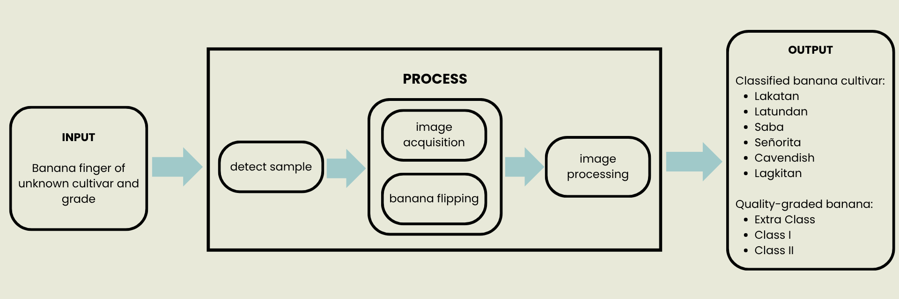
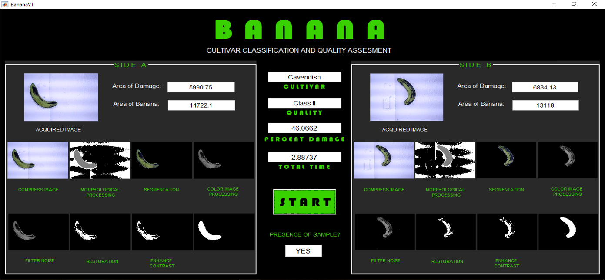
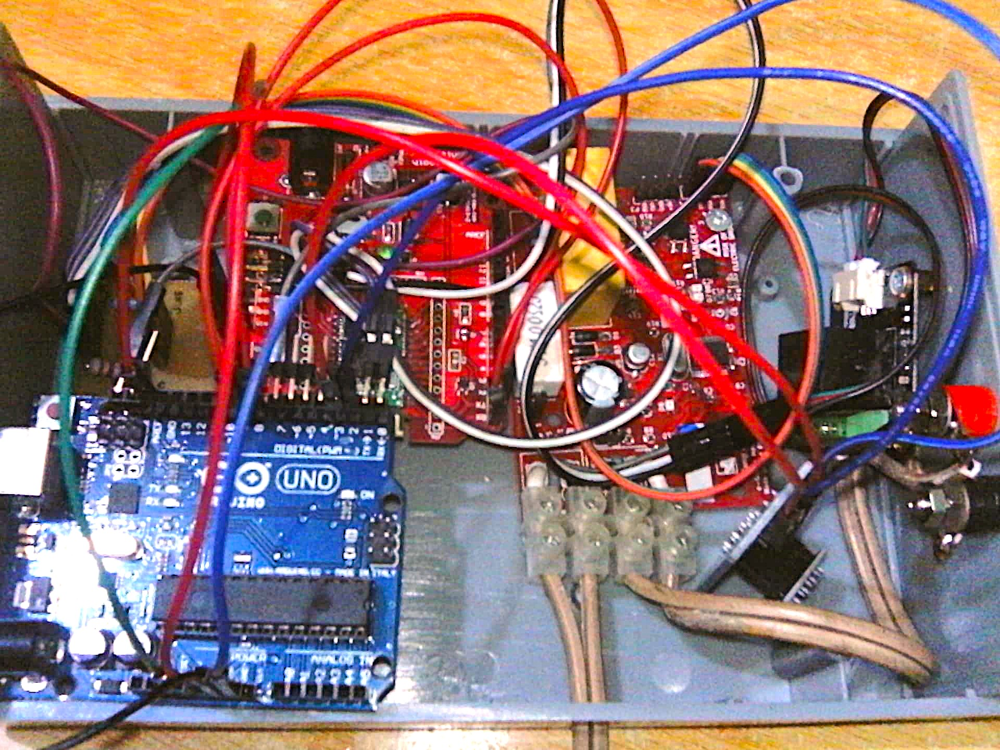
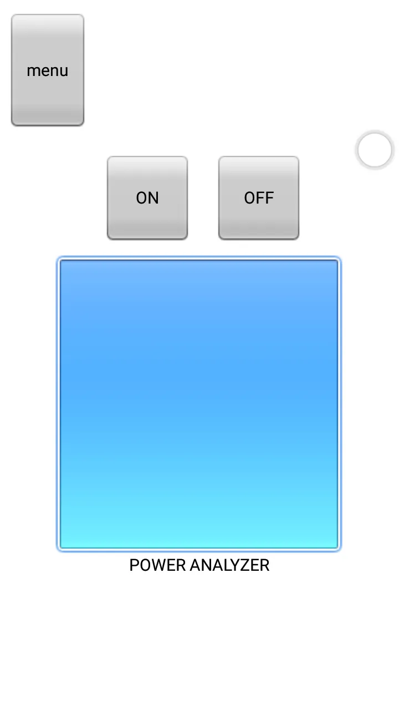
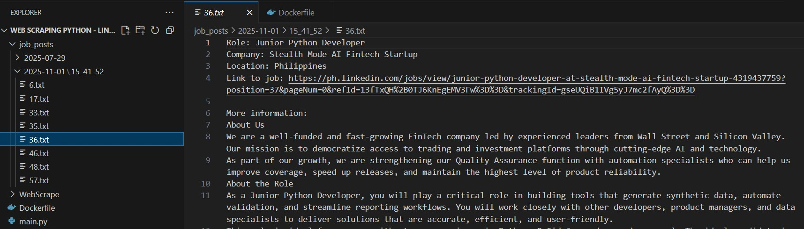
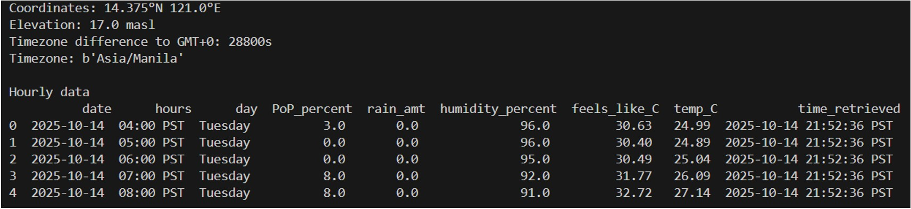

SHENELAE RATON

SOFTWARE ENGINEER
Focused on Python, automation, web, and data fundamentals.
Seeking full-time opportunity to join a supportive team, grow my skills, and deliver tangible, impactful solutions.
MORE ABOUT MYSELF ...
BS Electronics Engineering graduate from Asia Pacific College. My engineering background provides a strong foundation in logic and problem-solving.
Industry experience includes cloud automation, batch processing, test automation, front-end development, data manipulation and visualization, and SQL scripting.
Naturally curious, highly-driven, and committed to continuous learning and improvement.
Actively seeking for a full-time role to immediately leverage my skills and specialize in Python-based development.
SKILLS ...
Programming & Automation
Python C# Linux shell scripting Power AutomateWeb & Front-End Development
HTML CSS Bootstrap AngularData & Database Tools
Oracle Palantir Foundry PySparkCollaboration and Project Tools
Jira Azure DevOps Git MiroActive Development Focus
PostgreSQL Javascript Docker UiPath AutomationEXPERIENCES ...
PROJECTS ...
Cultivar and Quality Identifier for Bananas using Image Processing in MATLAB
System that determines the quality and cultivar of bananas. This involves a hardware to acquire the image of the banana and software for image processing. The basic parts of image processing include the following: preprocessing, feature extraction, and image recognition. The cultivar (Cavendish, Lagkitan, Lakatan,Latundan, Saba, and Señorita) classification is based on the trained model. The quality is determined through the calculation of area of damage compared with the thresholds for each classification (Extra Class, Class I, and Class II).
Power Consumption Monitoring and Remote Control of Appliances
Monitors the current power consumption of a device or appliance and control its on/off function through the interface of Roboremo App.
Automated LinkedIn Jobs Scraping [Ongoing]
Python-based automation tool that scrapes and filters LinkedIn job postings, prioritizing recent results for targeted job search analysis.
Weather API Notification System for Optimal Running Conditions [Ongoing]
Automation system that processes weather forecasts from the Open-Meteo API to recommend optimal daily running times via notification.
Resistor Decoder[Ongoing]
Website for determining the color-coded value of four- and five-band resistors. It contains three tabs based on the number of bands. There are buons that allow user to choose the corresponding band color. The result along with the tolerance percentage is displayed. Remaining tasks: deployment, section for the six-band resistor, and addional features (getting the band colors based on the resistor value, resistor color coding chart, and addional information for learning about resistors).
Cultivar and Quality Identifier for Bananas using Image Processing in MATLAB
Full Project Title: Postharvest Quality Assessment of Non-Chemical Bananas Utilizing HOG Feature Extraction and K-means Clustering
Banana industry is one of the main concerns of the country being one of the largest exporters of bananas. The common characteristics monitored for banana quality are color, size, and defects that are currently classified manually. This can be time-consuming, inconsistent, and has drawbacks in accuracy. With this, a system that is accurate in classifying the banana according to its cultivar and grade, fast in execution, and applicable to various banana cultivars is developed. This is made possible by image processing in MATLAB application using K-Means Clustering and HOG Feature Extraction as the main algorithms.
- ☘ Category: Capstone/Design Project
- ☘ Role: Programmer, Circuit Design
- ☘ Technologies/Tools: MATLAB, Arduino, Motors, Camera, IR Sensor, Image Processing, Machine Learning
- ☘ Features: Live image capture, GUI, real-time monitoring of image processing
System Overview
Sample Screenshot
Power Consumption Monitoring and Remote Control of Appliances
Monitors power consumption in real-time through the power analyzer integrated through the Arduino application and microcontroller. Results are displayed on the Roboremo mobile application. Appliance's on/off function can be controlled on the mobile app via Bluetooth through the integration of Bluetooth shield with Arduino. The ports of the chassis includes the following: banana plug for the appliance, plug to the 220V outlet, and USB type B to the Arduino.
- ☘ Category: Client Project (Individually done)
- ☘ Role: Programmer, Circuit Design, Hardware Assemble
- ☘ Technologies/Tools: Arduino Microcontroller, Power Analyzer, Bluetooth Shield, Relay Module, Bluetooth, Roboremo App
- ☘ Features: Real-time monitoring, mobile UI, remote control, bluetooth connection, 1 port for appliance
Hardware Connection
Sample Screenshot
Automated LinkedIn Jobs Scraping [Ongoing]
Python-based automation tool that scrapes and filters LinkedIn job postings, prioritizing recent results for targeted job search analysis. Extracted information includes the following: role, company, location, link to job, and job description. It currently stores the results on a txt file under the folder named based on current date and time. Will modify this to store results in an excel file instead and to store the configuration values in a separate file.
- ☘ Category: Personal Project (Ongoing)
- ☘ Technologies/Tools: Python (BeautifulSoup, requests), Docker, Web Scraping
- ☘ Features: option to filter out specific skills, automatically fetches information daily
Sample Output
Weather API Notification System for Optimal Running Conditions [Ongoing]
Determines the hours suitable for running outside based on the weather forecasts through Open-Meteo API. The forecast is analyzed once in the early morning, and once in the afternoon. The selected range of hours will be categorized into the following: Ideal, Good, and Poor. Remaining tasks: integrating individual modules into main file, updating of database table, and sending of notification to user.
- ☘ Category: Personal Project (Ongoing)
- ☘ Technologies/Tools: Python (Numpy, Pandas, smtplib), PostgreSQL, Open-Meteo API, YAML configuration, Automation
- ☘ Features: twice a day weather forecast fetching, database for forecast and results, email for notification, python script for setup
Sample Weather Forecast
Resistor Decoder [Ongoing]
Website for determining the color-coded value of four- and five-band resistors. It contains three tabs based on the number of bands. There are buttons that allow user to choose the corresponding band color. The result along with the tolerance percentage is displayed. Remaining tasks: deployment, section for the six-band resistor, and additional features (getting the band colors based on the resistor value, resistor color coding chart, and additional information for learning about resistors).
- ☘ Category: Personal Project (Ongoing)
- ☘ Technologies/Tools: HTML, CSS, Bootstrap, Javascript, Resistor Color Coding, Front-End Development
- ☘ Features: applicable to 4,5,6-band resistors, buttons for choosing each band color